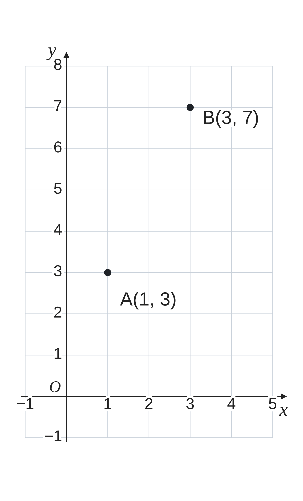
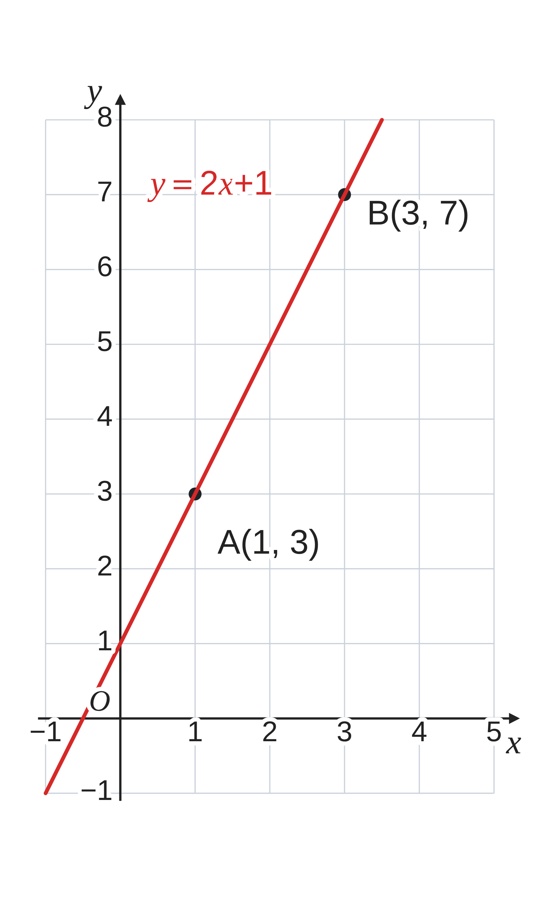
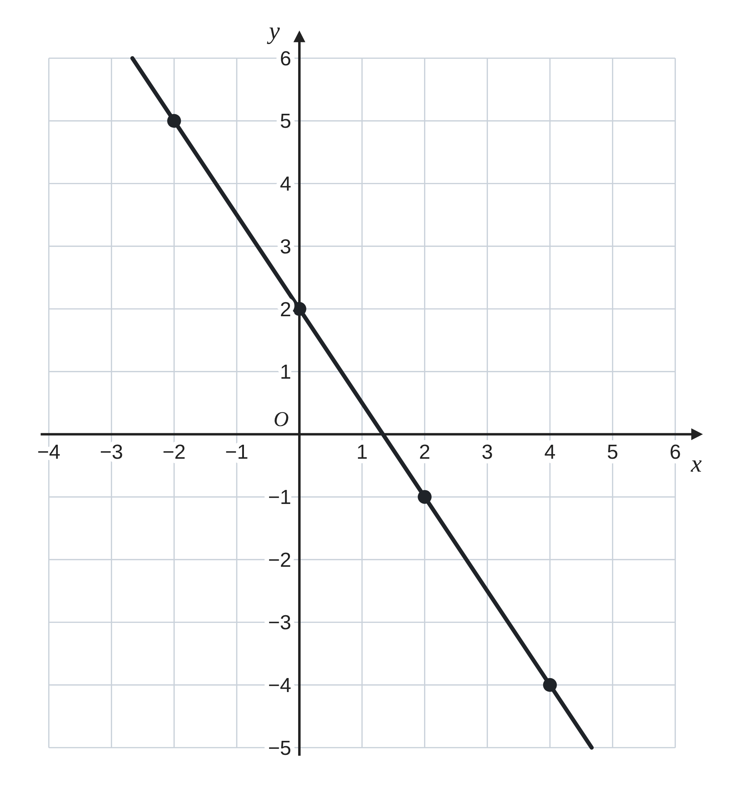

ペア学習
第10時 2点から、一次関数の式を求めよう
第9時の重要語句から、1人1問ずつ、言葉を選んで出題する。
聞かれた人は、その言葉の意味を、自分の言葉で言う。
変化の割合
傾き
座標を代入する
切片
一次関数 第10時 2点から、一次関数の式を求めよう
めあて
第10時 2点から、一次関数の式を求めよう
学習課題
グラフが、2点 A(1, 3)、B(3, 7) を通る
一次関数の式を求めよう。
前の時間は、傾きがわかっていた。
今日は、2点だけがわかっている。
【自分の考え】求め方と、式を書こう。
【ペア】自分とちがう求め方を書こう。

一次関数 第10時 2点から、一次関数の式を求めよう
学習課題のまとめ
第10時 2点から、一次関数の式を求めよう
x が 2 増えると、y は 4 増える。
傾き＝(7−3)÷(3−1)＝4÷2＝2 → y＝2x+b
点 A(1, 3) を代入して 3＝2×1+b b＝1
y＝2x+1
確かめ B(3, 7) … 2×3+1＝7 ○
（ほかの方法）y＝ax+b に、2点の座標を代入する。
3＝a+b …① 7＝3a+b …②
②−① 4＝2a a＝2 ① に代入 3＝2+b b＝1
y＝2x+1

一次関数 第10時 2点から、一次関数の式を求めよう
ことば
第10時 2点から、一次関数の式を求めよう
2点を通る直線の式 y＝ax+b は、次の 2通りで求められる。
方法1
a を、
(y の )÷(x の ) で求める。
1点の座標を y＝ax+b に して、b を求める。
方法2
2点の座標を、y＝ax+b に 代入して、
a、b の を解く。
答えは、y＝ax+b の形で書く。
一次関数 第10時 2点から、一次関数の式を求めよう
ことば
第10時 2点から、一次関数の式を求めよう
2点を通る直線の式 y＝ax+b は、次の 2通りで求められる。
方法1
傾き a を、
(y の増加量)÷(x の増加量) で求める。
1点の座標を y＝ax+b に代入して、b を求める。
方法2
2点の座標を、y＝ax+b にそれぞれ代入して、
a、b の連立方程式を解く。
答えは、y＝ax+b の形で書く。
一次関数 第10時 2点から、一次関数の式を求めよう
例題
第10時 2点から、一次関数の式を求めよう
グラフが、2点 ( , 5)、(4, ) を通る
一次関数の式を求めよう。
どちらの方法で求めてもよい。
方法1
傾きを先に求める
方法2
2点を代入して、連立方程式を解く
最後に、2点の座標を代入して、確かめよう。
一次関数 第10時 2点から、一次関数の式を求めよう
例題 解答
第10時 2点から、一次関数の式を求めよう
グラフが、2点 (−2, 5)、(4, −1) を通る一次関数の式を求めよう。
方法1
傾き＝(−1−5)÷(4−(−2))＝−6÷6＝−1
y＝−x+b に (4, −1) を代入 −1＝−4+b b＝3
方法2
5＝−2a+b …① −1＝4a+b …②
②−① −6＝6a a＝−1 ① に代入 5＝2+b b＝3
どちらも y＝−x+3
確かめ (−2, 5)：−(−2)+3＝5 ○ (4, −1)：−4+3＝−1 ○
一次関数 第10時 2点から、一次関数の式を求めよう
考えよう
第10時 2点から、一次関数の式を求めよう
①
選んだ 2点と、求めた式を書こう。
②
別の 2点を選んで、もう一度、求めよう。
③
気づいたこと。
どの 2点を選ぶと、計算が楽になるだろう。
発展 演習まで解き終わった人は、考えてみよう！
方法1と方法2は、ちがう方法に見えるが、計算の途中に、同じ数が出てくる。2点 A(1, 3)、B(3, 7) で、2つの方法の計算をくらべて、同じ数をさがそう。

一次関数 第10時 2点から、一次関数の式を求めよう
振り返り
第10時 2点から、一次関数の式を求めよう
今日のめあて
2点を通る直線
傾き
増加量
代入
連立方程式
今日わかったことを、ペアで1つずつ言い合おう。
ワークシートと演習プリントを出そう。（未完成でも出す）
一次関数 第10時 2点から、一次関数の式を求めよう